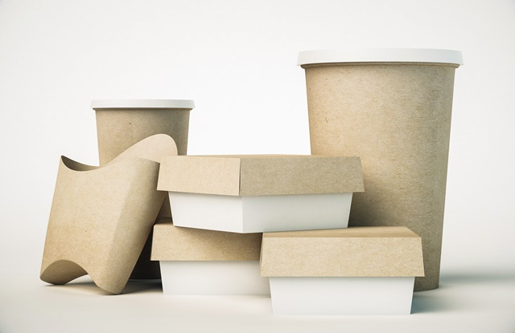
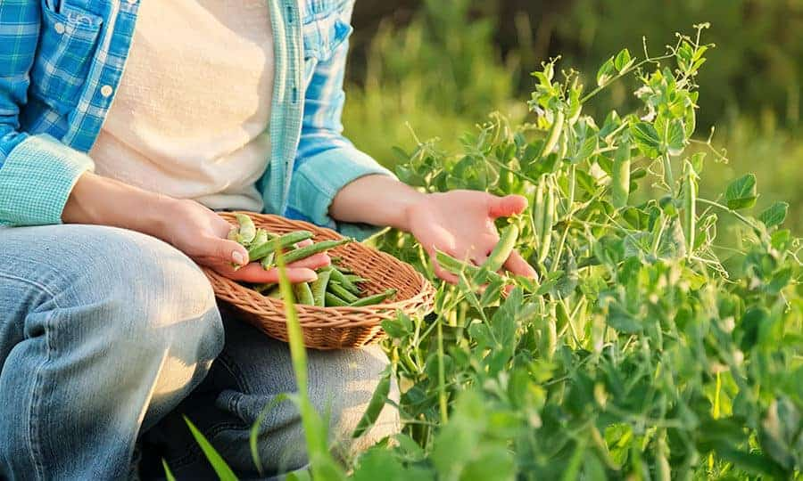

3 dicas de alimentações sustentáveis para contribuir para o meio ambiente
Para quem quer contribuir com a sustetabilidade, essas são execelentes formas para contribuir:
1. Evite o uso de embalagens, as embalagens de papel quanto as de plasticos que protegem a maioria partes dos alimentos que comemos são os maiores culpados pelo aumento de residuos no planeta, uma boa sugestão é adquirir alimentos não embalados ou que optem por embalagens em versões biodegradaveis.
2. Tenha uma horta, você tem um espaço aonde possa plantar? ou espaço pequeno mesmo pra por um vaso?. Separe algum pequenos momentos do seu dia para fazer uma pequena plantação e assim ter uma alimentação mais saudavel e sustentavel.
3. A terceira dica, mais não a menos importante. Aproveite 100% dos alimentos, tem o habitos de aproveitar todo o alimento? conseguir aproveitar pedaços que ficam cascas de produtos é muito importante para tornar a sua refeição mais nutritiva, reduzir gastos e evitar desperdicios. Existem milhares receitas simples de se aproveitar todo o seu alimento.